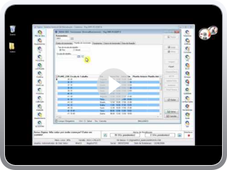Módulo Mão de obra - Sigma
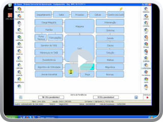Cadastro Hierárquico de Equipamentos
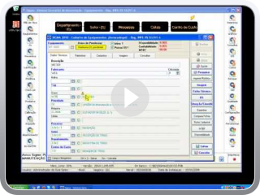Cadastro de Ficha Técnica de Equipamentos
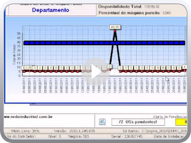Funcionalidades relacionadas ao Módulo Equipamentos
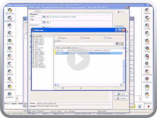Replicagem de programações Preventivas por Familia
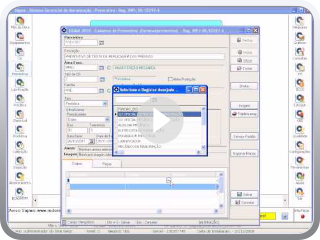Relação entre funcionalidades nos módulos - Módulo Mão de Obra - Parte 1
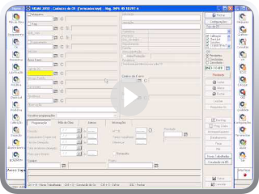Funcionalidades relacionadas ao Módulo Mão de Obra
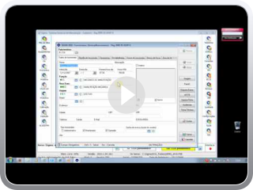Módulo Mão-de-obra
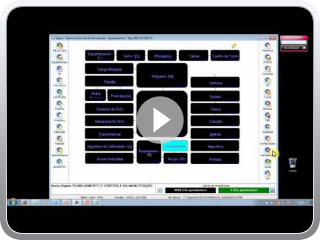Módulo de Equipamentos
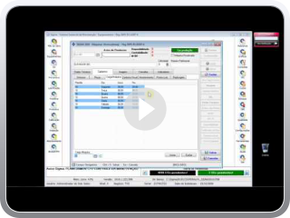Cadastramento de Máquinas
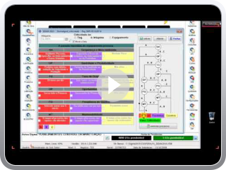Algoritmo de Criticidade
Adding Video to Blog by VideoLightBox.com v2.1